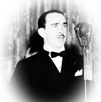

Exploring the Piazza dell’Arte: Ned Washington
In our continuing series exploring the lives and works of the artists featured on the Piazza dell’Arte at Scranton’s Courthouse Square, we will profile 12-time Oscar nominated lyricist Ned Washington.
Washington was born in Scranton on August 15, 1901, the only one of nine children who did not study music. He wrote poetry, instead, some of which was published in local newspapers and magazines. At 21, he moved to New York to break into show business, getting his start in vaudeville as a master of ceremonies and talent agent.
He wrote songs in his spare time and his breakthrough came when his song “Singing in the Bathtub” was included in the musical revue “Earl Carroll Vanities of 1929.”
Washington is considered one of the most prolific of the Tin Pan Alley writers, having collaborated on several scores for Broadway including “Vanderbilt Revue,” “Murder at the Vanities,” “Blackbirds of 1934” and “Hello, Paris.” In 1933, he collaborated with Bing Crosby, writing lyrics for the love song “A Ghost of a Chance.”
He signed to a contract with MGM in 1934 and moved to Hollywood. Washington wrote complete scores for the films “Tropic Holiday,” “Hands Across the Border,” “Mexicana” and “Let’s Do It Again.”
Some of Washington’s finest pieces would come from his work on Disney films like “Pinocchio” and “Dumbo;” and in 2001, he would be named a “Disney Legend” for his efforts. In 1939, he co-wrote with Leigh Harline lyrics for “When You Wish Upon a Star.” The song and “Pinocchio” score would earn Washington his first Academy Award nominations and a pair of wins in the Original Score and Original Song categories. “When You Wish Upon a Star” remains the signature song of The Walt Disney Company today.
Disney animator Frank Thomas once recalled that during a film’s production, “Ned would sit facing Walt (Disney), knee-to-knee, and while Leigh (Harline) played a song they’d developed on the piano, Ned would slap Walt’s knee and say ‘Oh, you’re gonna’ love this …’ and ‘Oh, listen to this, Walt …” He was very enthusiastic to the point Walt finally said, ‘For crying out loud Ned, let me listen to the song!'”
Washington collected 12 Academy Award nominations over his 40-plus year career. He won again in 1953 for Best Original Song with “High Noon” and his last nomination came in 1962 in Best Original Song for “Town Without Pity.” He also wrote for radio, stage and early television, creating the theme songs for such series as “Rawhide.”
He was inducted into the Songwriters Hall of Fame in 1972 before he passed away in Los Angeles, California, on December 20, 1976. He was posthumously presented an ASCAP Award in 1989 for Most Performed Feature Film Standards for “When You Wish Upon a Star.”
Spiritual Heir: There’s no shortage of talented songwriters in the Scranton area today but we’ll single out Marko Marcinko for his ubiquitous presence in the Scranton music scene and for his talent for arrangement. He is the leader of Marko Marcinko Latin Jazz Quintet, Marko Marcinko Jazz Trio and Music For Models and helped create the Pennsylvania Jazz Alliance. The Marko Marcinko Latin Jazz Quintet is featured Every Wednesday at the State Street Grill, Clarks Summit from 8-11 p.m. or look for Marko at the Scranton Jazz Festival Aug. 1-3 at the Radisson Lackawanna Station Hotel.
This article was part of a series that explored the lives and legacies of the artists featured on the Piazza dell’Arte at Courthouse Square, Scranton. It first appeared on Electric City Renaissance. Read the rest of the series.